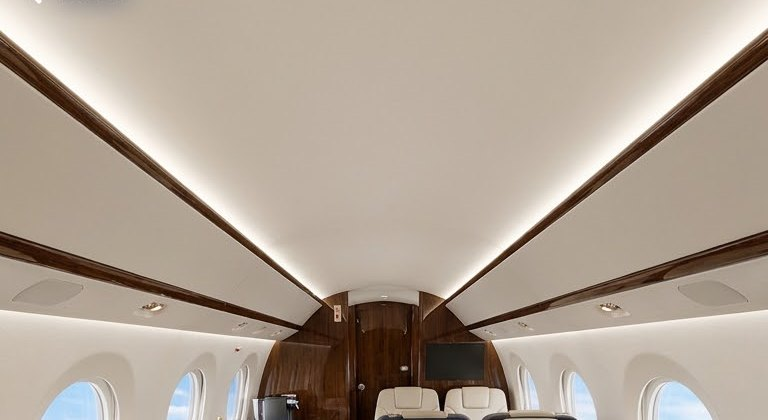
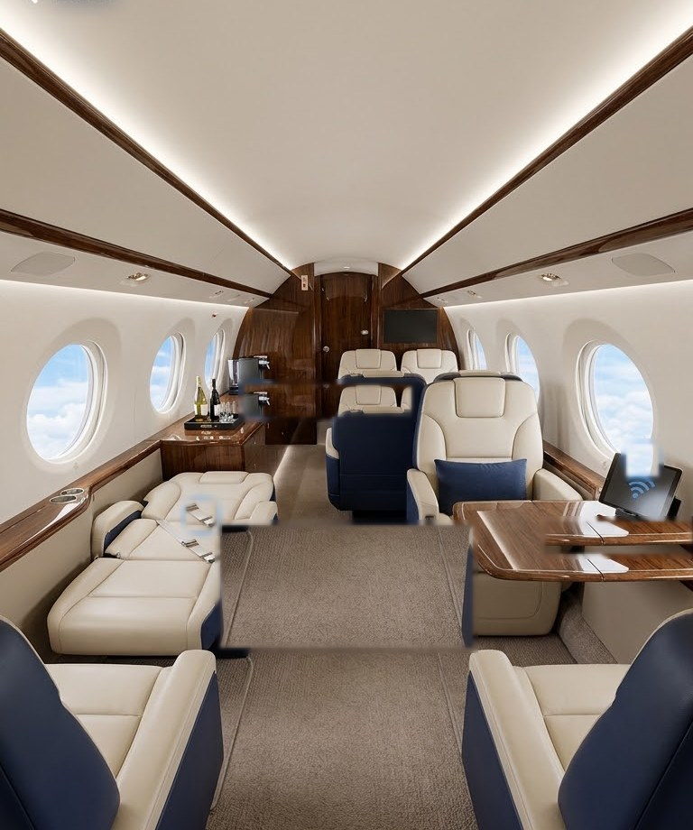

Visual direction: quiet luxury
Jettingo should feel like stepping into a private terminal: calm, orderly and impeccably serviced. Deep navy carries authority, muted gold marks what is premium, and generous ivory space lets content breathe.
Brand mark
The "J" is crossed by a swept gold wing, the moment of take-off. "go" is set in gold to underline the promise: book it and go.
Design principles
Restraint over decoration. Hairline borders, soft depth, gold used sparingly so it always means "premium".
Booking a jet must be faster than a phone call. One primary action per screen, totals always visible.
Live status, countdowns and tracking replace uncertainty. The traveler is never left guessing.
Passenger, corporate and partner products share tokens and components, so the platform feels like one brand.
Color palette
A monochrome navy foundation with a single metallic accent. Status colors are muted to sit comfortably next to gold.
Surfaces by context
The background tells users what kind of moment they are in.
Warm and tactile, reduces eye strain while filling in details.
Maximum clarity for invoices, tables and analytics.
Login, live tracking, day of travel. Frosted glass panels over dark.
Typography
Inter throughout: systematic, highly legible at small sizes and on any screen. Tight negative tracking on headlines gives an editorial, premium feel. Labels use uppercase with wide tracking, a nod to aviation instrument panels.
Interface elements
A preview of the core building blocks. These are live components from the prototype. The full UI kit is a Phase 3 deliverable.
Iconography
Line icons at a 1.75px stroke: light enough to feel refined, strong enough to read at 16px. Gold tint is reserved for premium services.
Photography
Natural light, real cabins and aircraft in their element. Warm interiors balance the cool navy UI. Avoid stock clichés and heavy filters.


From exploration to one system
Early concepts explored three looks: light minimal, dark glass and navy-and-gold. The final direction keeps the best of each.
The strongest premium signal. Navy is primary everywhere; stray blues from early concepts were removed.
Dark frosted glass is reserved for immersive, real-time screens so it stays special.
Booking and admin stay on ivory and white for focus and legibility.